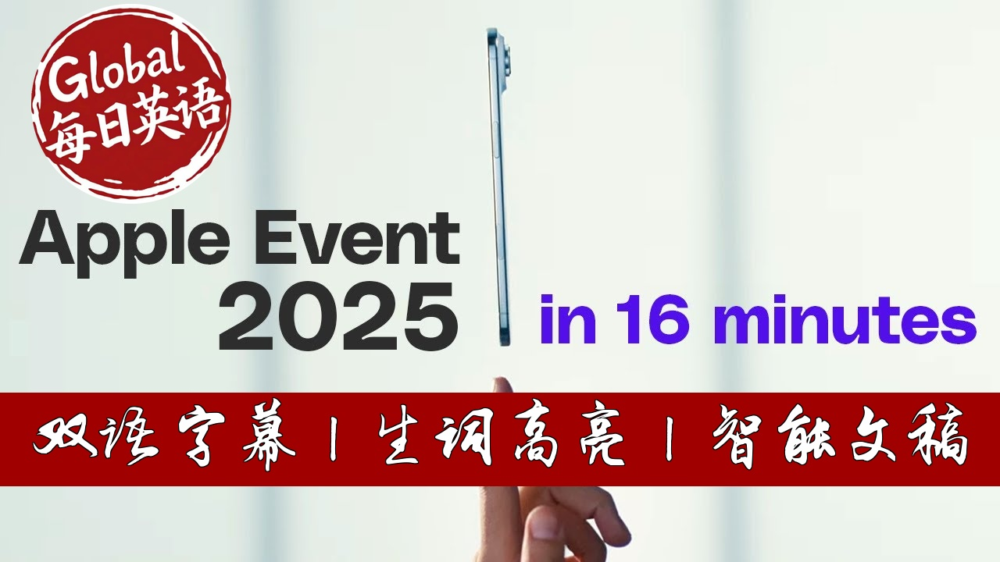

【快速看完苹果2025秋季发布会：AirPods Pro 3降噪升级、Apple Watch血压监测、iPhone 17系列颠覆设计】
Summary: Apple introduced major updates across its product lines at a special event held at Apple Park. The new AirPods Pro 3 feature enhanced noise cancellation and live translation capabilities. Apple Watch Series 11 and SE 3 bring health advancements like blood pressure monitoring and SleepScore. The all-new iPhone 17 series includes a standard model, a ultra-thin iPhone Air, and the powerful iPhone 17 Pro with improved thermal management and camera systems. All products will be available for pre-order soon and launch on September 19th.
摘要： 苹果在Apple Park举行的特别活动中发布了全线产品重大更新。新款AirPods Pro 3具备增强的主动降噪和实时翻译功能。Apple Watch Series 11和SE 3带来了血压监测和睡眠评分等健康功能。全新iPhone 17系列包括标准版、超薄iPhone Air以及搭载改进散热系统和摄像头的iPhone 17 Pro。所有产品即将开启预售，9月19日正式上市。

⏱️ Estimated Reading Time: 27 min.
📚 四级生词 📚 六级生词 📚 雅思生词 📚 托福生词 📚 专八生词 📚 SAT生词 📚 考研生词 📚 GRE生词
Good morning.
Welcome to Apple Park.
An Apple design has always been fundamental to who we are and what we do.
Let's start with AirPods.
We designed a custom multi-port acoustic architecture, which precisely controls the airflow that carries sound into the ear.
This transforms the bass response.
It widens the sound stage so you hear every instrument and brings vocals into stunning focus across music, shows and calls.
And it gets even better with phenomenal active noise cancellation.
Ultra low noise microphones and advanced computational audio, combined with new foam-infused ear tips, breathing greater noise isolation.
This significantly improved performance, delivering twice the ANC compared to the previous generation, which were already amazing.
We're bringing the magic of AirPods to the way you communicate across languages.
With live translation powered by Apple Intelligence now, when you are together with someone who speaks a different language.
Like exploring a market abroad, AirPods Pro will help you understand them in your preferred language.
Using a new simple gesture, live translation begins.
Translating Spanish, while ANC lowers the volume of the person speaking and to make them fit more securely in your ear, we shake the design to match the natural geometry of the ear canal.
With entirely new ear tips, now in five sizes, all together, these are the most stable and best fitting AirPods ever.
We're also really excited to add heart rate sensing during workouts with AirPods Pro 3.
Now, when you go to the fitness app on iPhone, you'll see a new workout experience.
Where with just AirPods Pro, you can track up to 50 different workout types.
You can track heart rate and calories burned using a new AirPods Pro.
We are moving from six hours on a single charge to eight hours, taking you through that transatlantic flight, while listening to music with active noise cancellation.
To help our hearing aid users, we are thrilled to provide 10 hours on a single charge in transparency.
So that's AirPods Pro 3, delivering since sensational audio performance.
They will still be available for $249, and they will be available September 19.
Let's turn to Apple Watch.
Today, we're making the best watch in the world even better.
Introducing Apple Watch Series 11.
It's our thinnest and most comfortable watch, and it's even more durable.
It's two times more scratch-resistant.
Series 11 now includes the latest cellular technology, 5G.
The new Watch Face Flow uses liquid-glass new rules to beautifully refract swirls of color.
This year we're thrilled to share our next advancement focused on a problem of massive proportions.
High blood pressure.
To help, we've developed a groundbreaking feature that can alert you to possible hypertension, just by wearing your Apple Watch.
We expect clearance from the FDA and other regulators soon, with availability in 150 countries and regions this month, including the UFs in Europe.
Now, we'll help you understand the quality of your sleep and how to make it more restorative with SleepScore.
The quality of your sleep is interlens by several factors, such as sleep duration, bedtime consistency, how often you wake up, and the time spent in each sleep stage.
SleepScore analyzes these factors each night and provides a classification plus a score.
We also re-engineered the battery.
Series 11 now gets up to 24 hours of battery life, so you can wear it all day and all night.
Series 11 comes in jet black, silver, rose gold, and a beautiful new space gray, all made from 100% recycled aluminum.
There are also gorgeous polish cases made from 100% recycled titanium, in natural, gold, and slate.
And that's Apple Watch Series 11.
This year we are delighted to introduce Apple Watch S3.
First, it gets our most powerful Apple Watch chip, S10, which enables even more features.
It brings an always on display to SE for the first time.
With S10, SE also supports gestures, like double tap and wrist flick, so you can easily control your watch with just one hand.
SE already has important features like heart rate notifications, fall detection, and crash detection.
For those moments when you don't have your AirPods handy, you'll be able to play media like music or podcasts directly through the speaker.
And for the first time, SE supports fast charging, making it easy to quickly top off the battery.
And now charges up to two times faster than the previous model, made with 100% recycled aluminum.
That's Apple Watch SE 3, featuring a new always on display, 5G, temperature sensing, sleep app notifications, and sleep score.
Apple Watch Ultra is the ultimate sports and adventure watch.
This year we're taking it further with Apple Watch Ultra 3.
The display is now brighter when viewed at an angle.
And theater borders allow us to grow the screen area without changing the case size.
The result is the largest display ever in an Apple Watch.
And Ultra keeps you connected no matter where you are, with 5G cellular, for more coverage and a faster, stronger connection.
Now when you journey off the grid, you can stay safe even touch with loved ones, using satellite and available countries and regions.
Just a few tabs gather critical information, you can get you their emergency help you need.
You can also send messages, and share your location with fine line.
Ultra 3 also includes a larger battery, and now gets up to 42 hours of battery life.
Ultra will be available in black and natural titanium.
That's Apple Watch Ultra 3, now featuring the largest display and the longest battery life of any Apple Watch.
Apple Watch SE 3 starts at just 249.
Apple Watch Series 11 starts at 399.
And Apple Watch Ultra 3 starts at 799.
You can pre-order all the new models today, and they will be available starting September 19th.
Today, we're raising the bar once again with an all new iPhone lineup that's unlike anything we've ever created.
iPhone 17 has a beautiful, more durable design, and comes in five gorgeous colors.
Lavender, Miss Blue, Black, White, and Sage.
The new design has a larger 6.3-inch display with thinner borders, so you can see more and do more.
And the display of iPhone 17 features pro-motion, just like our pro-models, with an adaptive refresh rate up to 120 hertz.
When outside, iPhone 17 is more readable, with 3,000 nits peak outdoor brightness, or highest ever on iPhone.
This makes a display on iPhone 17 our best yet.
iPhone 17 introduces Ceramic Shield 2.
Now, it has three times better scratch resistance.
Powering iPhone 17 is the latest generation of Apple Silicon, A19.
Built with the most advanced 3 nanometer technology, A19 is faster and more efficient.
It has an updated display engine to power pro-motion and the always on display.
It has an improved neural engine, tailored to power, incredible on-device performance for Apple Intelligence.
A19 has a 6-core CPU for our latest performance and efficiency cores to make iPhone 17 responsive while enabling great battery life.
The next generation 5-core GPU provides a big step up for graphics intensive tasks.
If you're upgrading from an older iPhone, you'll experience a huge boost in speed.
The efficiency of Apple Silicon contributes to all day battery life on iPhone 17.
And with pro-motion, iPhone 17 gets up to 8 more hours of video playback compared to iPhone 16.
Our fusion technology combines the capabilities of two cameras in one.
With a main camera and an optical quality 2x telephoto, each with dedicated image pipelines.
And now, iPhone 17 gets a new 48 megapixel fusion ultra wide camera.
It has four times the resolution compared to iPhone 16.
You're going to love how easy it is to take amazing photos and videos.
So this year, we are thrilled to introduce our phenomenal new center stage front camera.
This new front camera has our widest feel to view.
It's enabled by our largest front camera sensor, almost twice the size of our previous front camera.
The center stage camera's unique shape and larger size allow for high resolution photos and videos in any orientation.
The extra pixels in the square sensor level up video too.
All you're on the move selfie videos will be ultra stabilized using some of the same technology that enables action mode on the rear cameras.
And that completes the fantastic iPhone 17.
Introducing the newest member of the iPhone family.
This is iPhone N.
Thrilled to introduce the impossibly thin iPhone Air.
At 5.6mm, it's the thinnest iPhone we've ever made.
The gorgeous 6.5 inch display is our best featuring pro motion up to 120 hertz, always on and 3,000 nits of peak brightness.
And is protected by the new ceramic shield too.
It's four times more resistant to cracks than our previous back glass.
It also protects the new plateau that now houses major internal components at the top of iPhone.
The frame of iPhone Air is made of titanium.
This is an essential material choice for such a thin design and enables it to exceed our stringent Ben strength requirements.
There are four stunning colors to choose from.
Space black, cloud white, light gold, and sky blue.
iPhone Air demands the most efficient high performance chip we've ever built for iPhone.
And that is A19 Pro.
Our performance cores gain improvements to front and bandwidth and branch prediction, making A19 Pro the fastest CPU in any smartphone.
We are introducing the second generation of our dynamic caching architecture.
We doubled our 16-bit floating point math rates and we built a new unified image compression.
We are now taking a big step forward, building neural accelerators into each GPU core, delivering up to three times the peak GPU compute of A18 Pro.
This is MacBook Pro levels of compute in an iPhone.
What might appear to be a single camera is actually our new powerful 48 megapixel fusion camera system, which works like multiple advanced cameras in one.
The large sensor enables a second optical quality lens, the integrated 2x telephoto, delivering stunning photos and 4K videos.
And there is so much more to these camera systems, like action mode, audio mix, 4K Dolby Vision, and all the features of camera control.
So now, let's talk about battery life.
The internal design has been completely rethought to maximize battery space.
Now despite being much thinner and lighter, iPhone Air still gets amazing all day battery life.
This is incredible all day battery life in our thinnest iPhone ever.
We were able to create a new low profile mag safe battery that when attached feels great in your hand and is slim enough to drop right into your pocket.
When using them together, iPhone Air has up to 40 hours of video playback.
That's enough to binge on all 40 episodes of For All Man Kind, making it a great accessory for long trips.
We also designed two custom cases for iPhone Air.
The first is a translucent case with a back panel that is less than 1mm thin.
The second is a lightweight bumper made from a reinforced polycarbonate.
It perfectly frames iPhone Air and is available in four matching colors.
Both options can be paired with the new cross body strap.
It's lined with thin flexible magnets designed to hold the straps together and allow you to easily adjust the length.
So that's the incredibly advanced iPhone Air.
Our thinnest iPhone ever with pro performance inside.
Introducing iPhone 17 Pro.
The new definition of Pro.
iPhone 17 Pro.
The iPhone 17 Pro design is more than just a fresh, bold new look.
It also delivers a dramatic leap in performance that makes this the most powerful iPhone ever.
And it starts with an entirely new approach to thermal management, which is critical to system performance.
At the heart of the new thermal management system is an Apple design paper chamber.
D.I. and I's water is sealed inside the paper chamber, which is laser welded into the aluminum chassis.
This efficiently moves heat away from the components.
We used an Apple designed aerospace grade aluminum alloy, where it's superior thermal conductivity, which is 20 times greater than the titanium we previously used.
And the aluminum is anodized in three stunning finishes, a refined silver, an elegant deep blue, and the bold and eye catching cosmic orange.
A key element of the design is the forged plateau, which efficiently dissipates heat and creates extra space for components, making room for a larger battery.
The glass in the back is even better protected by the aluminum unibody design.
In fact, it's no longer glass at all.
Like iPhone Air, we're now using ceramic shield for the back.
All of these design decisions made it possible to grow the battery significantly, resulting in iPhone 17 Pro Max achieving the best battery life ever in an iPhone.
Enabling up to an astonishing 39 hours of video playback.
Next, let's talk about the Pro Camera System, which combines incredible hardware, with advanced computational photography, to capture beautiful photos and videos.
On the front, we have the 18 megapixels center stage camera, our innovative new front camera system.
On the rear, all three cameras are 48 megapixels for the very first time.
And not only are the sensors 48 megapixels, but all three are fusion cameras.
iPhone 17 Pro has our next generation, Tetra Prison Telephoto, with an improved 3D sensor shift image stabilization system.
We're adding support for ProRes RAW Capture, which is the industry leading Apple Develop Video Codec that records all of the information captured by the camera sensor, provide unparalleled flexibility in post-production.
We're also adding support for GenLoc, which enables super precise video synchronization.
It's particularly useful for content creators and streamers.
We're introducing our tech woven case, with the new innovative materials.
We also have clear cases, as well as a great selection of colors and silicone.
This is a huge upgrade, featuring a stunning design, and powered by A19 Pro for our best performance ever.
This is, without question, our best iPhone lineup ever.
All the new models will start with 256GB of storage.
iPhone 17 starts at 799, keeping the same great price.
iPhone Air starts at 999.
An iPhone 17 Pro starts at 1099.
The same great price is last year 256GB iPhone 16 Pro.
And for the first time, a two terabyte configuration is available on iPhone 17 Pro Max.
And the iPhone lineup starts at just 599 with iPhone 16e.
Pre-orders for all new models start this Friday, and they will be available starting September 19th.
Have a great day!